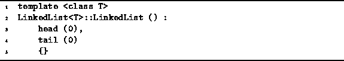

Data Structures and Algorithms
with Object-Oriented Design Patterns in C++
Data Structures and Algorithms
with Object-Oriented Design Patterns in C++
The code for the default LinkedList<T> constructor
is given in Program  .
This routine simply constructs the representation of
an empty linked list as shown in Figure (b).
I.e., both the head and tail pointers are set to zero.
The running time of the default constructor is clearly constant.
I.e., T(n)=O(1).
.
This routine simply constructs the representation of
an empty linked list as shown in Figure (b).
I.e., both the head and tail pointers are set to zero.
The running time of the default constructor is clearly constant.
I.e., T(n)=O(1).

Program: LinkedList<T> Class Default Constructor Definition
 Copyright © 1997 by Bruno R. Preiss, P.Eng. All rights reserved.
Copyright © 1997 by Bruno R. Preiss, P.Eng. All rights reserved.